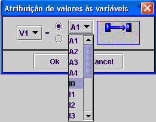

Todos os programas criados são sequenciais. A máquina de estados começa por ler o primeiro bloco, se for um bloco de comparação acontece uma de duas situações:
1-A comparação resulta verdadeira e o programa passa para o próximo bloco na mesma coluna.
2-A comparação é falsa e o programa vai para o bloco imediatamente à direita. Se não existe nenhum bloco à direita(note que se entende existir bloco à direita como: existir uma ligação com o bloco à direita) o programa é reiniciado.
nota: no caso de conjuntos de blocos de ANDs, se uma das condições não se verificar, vai para o bloco à direita do primeiro bloco do conjunto.
Caso o bloco em questão não seja de comparação, o programa efectua a operação desejada e segue para o próximo bloco na mesma coluna. Se este não existe, o programa é reiniciado.
Todos os programas começam no bloco Inicio Programa (linha 1, coluna 1).
O primeiro bloco é adicionado imediatamente abaixo do bloco Inicio Programa, ou seja, na 2º linha e 1ºcoluna.
Sempre que é adicionado um novo bloco, surge uma janela de configuração que permite personalizar o bloco. Por exemplo para o bloco de atribuição de valores às variáveis surge a seguinte janela:
